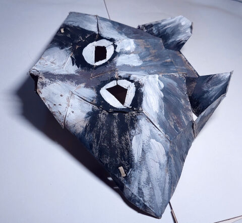

I've wanted a fursuit for as long as I've known I'm a furry. They're expensive, so naturally, instead of supporting existing artists I'm gonna spend years learning to sew – a skill that I probably won't use anywhere else! I'm exaggerating. It is nice being able to repair things. That's actually how I started learning: by watching some videos on how to repair holes in socks.
On my headphones the soft ear–contacty bit had a plastic coating that started coming off, exposing the fabric underneath. Besides looking bad I also assumed it might be unhygienic (idk), so I decided to make a cover for it by just cutting a circle out of an old sock and sewing a rubber band around it. It's pretty janky, the edges are raw yadda yadda, but it works, it stays on the headphones and I've been using it for like 3 years now. I've got the headphones on as I write this :D
My first fursuit–esque thing (besides stuff I made as a kid) was a raccoon mask for a Christmas event at uni (because there's a Latvian tradition Ķekatas that's a bit similar to Halloween).
How I made it:
For Pride the following year I bought stuffing and white faux fur in an online store.
Anyway, I followed Neffertity's puffy paw tutorial fairly closely, drafting the patterns myself and sewing by hand. Drafting is probably the most intimidating part, since it locks you into the design. But, I don't know if I got lucky or what, but after drawing and cutting out a paper draft or two, I used it and the end result came out just how I wanted it to. Sure, sometimes while sewing I found that an edge was a bit longer than it should be, so I had to scrunch up the longer piece, but the fur hides that pretty well. Fur, while kind of annoying to work with (especially for machine sewing, I imagine), is very forgiving. Little mistakes in stitching or alignment are pretty much invisible from the outside. So I say don't be afraid, ✨
I was gonna paint the paws too, but it was fairly late in the night so I decided I need to sleep too. Good thing too, since I now know it would've taken forever. Conveniently, I used them unpainted in a Death (Puss in Boots) cosplay for Halloween, only painting the claws black. I made the mask base pretty similarly, but because I used almond milk cartons (it's the only thing I had on hand at the time) and double sided tape. I specifically wanted to try making a head with fur, so I sewed it onto the edges and around the eyes.

If you only need the paintjob to last one event, gouache is great! The tips will rub off over time, giving an almost frosted look. I bet someone could find a way to use that to their advantage. And note that painting takes way longer than you think it would. I finally painted the paws before the next Pride and it took most of the day. Also, don't overdo it with the paint like I did – it won't dry and will end up looking disheveled. I had to go back with wet sponge to get the excess paint out.

I wanna make a real fursuit head for next pride. I better actually come up with a fursona by then.